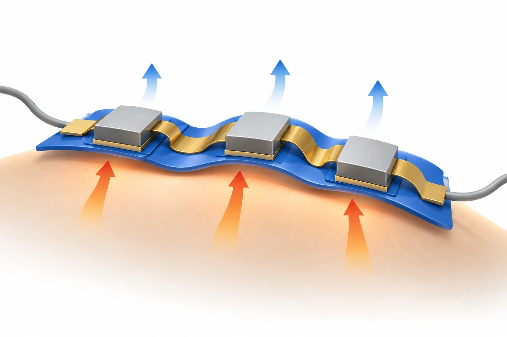

연구 배경과 분류
출판사 초록은 전기 접촉·열 전달·피부 순응성을 함께 다루는 광범위한 리뷰임을 확인한다. 특정 접합법 중심이 아니므로 소자 통합의 기초·연결 검토에 두고 조직 결합 및 배선의 교차 범위를 표시한다.
경계 분류: 탐색을 위해 가장 가까운 주제를 배정했습니다. 분류 근거와 교차 연관을 함께 읽어야 하며, 주 테마만으로 연구 범위를 한정할 수 없습니다. 기초 연구의 분류는 직접적인 바이오전자 응용을 입증하지 않습니다.
연구 배경
몸에 붙이는 열전 소자는 피부에서 열을 얻거나 피부의 열을 옮기는 동안 움직임에도 적응해야 합니다. 열전 재료의 성능이 좋아도 피부와의 틈, 연결부의 전기 저항, 외부로 열을 내보내는 경로가 기기 성능을 제한할 수 있습니다. 이 종설은 재료의 성능 지표와 착용 기기 전체의 성능을 연결해 읽도록 합니다.
핵심 접근과 발전
연성 구조는 피부의 곡면을 따라 접촉을 유지하는 데 유리하지만, 유연성만 높인다고 열전 성능도 함께 좋아지는 것은 아닙니다. 연결 구조와 열 전달 경로가 동시에 바뀌기 때문입니다. 따라서 재료 선택, 부품 배치, 접촉 안정성을 함께 설계하는 것이 핵심이며 단일 재료의 우수성을 완성 기기의 우수성으로 바꾸어 읽지 않습니다.

AI 생성 개념도: 착용형 열전 소자에서 곡면 접촉, 변형 가능한 전기 연결과 열 전달을 함께 고려하는 종설의 설계 관점입니다. 화살표는 개념적 열 흐름을 뜻하며, 특정 장치의 체온 발전 출력이나 냉각 성능을 나타내지 않습니다.
개별 블록은 기능 단위, 금색 띠는 연결의 기호입니다. 내부 열전 접합, 배선도, 재료 조성, 온도·출력·치수와 개수 비율은 재현하지 않았습니다. 종설의 키리가미 실험을 묘사한 그림이 아닙니다.
논문 원그림을 복제한 이미지가 아니며, 원그림 재사용 허가를 의미하지 않습니다.
공개 논문의 개념으로 웹 ChatGPT에서 생성하고, 선택적으로 읽은 본문과 명시된 독립 검토 범위 안에서 개념의 일치 여부를 확인했습니다. 전체 본문·보충자료 검증을 뜻하지 않습니다. 표시용 WebP 인코딩 외에 자르기나 내용 편집을 하지 않았습니다.
평가 방법과 조건
발전 모드는 기기에 실제로 걸리는 온도차와 전기 부하가 출력에 직접 영향을 줍니다. 냉각 모드에서는 투입 전력뿐 아니라 뜨거운 쪽의 방열과 피부 접촉 조건이 중요합니다. 같은 열전 재료라도 두 모드의 경계 조건이 다르므로 출력과 냉각 온도를 하나의 성능 순위로 묶기 어렵습니다.
주요 결과
종설이 소개한 키리가미 구조는 늘어날 때 구조가 펼쳐지며 원통형 열원과의 접촉을 유지했고, 변형 상태에서도 비슷한 출력이 보고되었습니다. 이는 열전 재료 자체를 늘이는 대신 기하 구조로 변형을 수용한 사례입니다. 다만 해당 사례의 열원은 100 °C 실험 조건이므로 체온 발전 성능으로 옮겨 읽지 않으며, 인용 원논문의 원자료를 별도로 재검증한 결과도 아닙니다.
한계와 남은 질문
편집상 후속 질문은 반복 착용 중 접촉과 연결 저항이 얼마나 유지되는지, 같은 주변 온도와 면적에서 발전·냉각이 어떻게 달라지는지입니다. 답하려면 각 인용 연구의 장치 크기와 측정 조건을 다시 확인해야 합니다. 현재의 선정 절 열람만으로 장기 착용 안전성이나 보편적인 최적 설계를 확정하지 않습니다.
관련 외부 연구
Modular assembly of self-healing flexible thermoelectric devices with integrated cooling and heating capabilities
DOI: 10.1038/s41467-025-59602-8 ↗
초록에서 액체금속 전극의 선택적 봉지와 자가 회복 모듈 조립을 확인했다. #99의 접촉·열 전달 논점을 구체화하는 인용 사례다.
리뷰와 실험 논문의 성능을 직접 순위화할 수 없다. 실험 온도차에서 얻은 출력은 일상 착용 출력과 같지 않다.
초록 확인교신저자 확인
서정목 교신 확인아래는 서정목의 교신저자 여부에 관한 확인 기록입니다. 저자 순서나 별표만으로 판정하지 않으며, 본문 내용 검증과 별도로 읽어야 합니다.
- 교신 고지 확인 출처 ↗
Jungmok Seo; contrib corresp="yes"; correspondenceTo
front/article-meta/contrib-group and author-notes; name-to-corresp reference and email · public_repository_xml_read
- 본문 확인 범위
- 출판사 서지·초록·§1·§3.1–3.2·§7을 확인했습니다. 보강 시 동일 논문의 공개 XML에서 §2.1–2.2, §4.1, §7을 직접 읽어 발전·냉각의 조건과 열 전달 한계를 대조했습니다. 인용 실험의 원자료·수치를 전수 재검증하지 않았습니다. 키리가미 사례의 §3.1도 공개 XML에서 재확인했으며 원 인용 논문의 독립 검증은 아닙니다.
- 보충자료 확인 범위
- 보충자료를 전수 검토하지 않았습니다. 본문에서 보충자료를 인용한 사실과 해당 보충자료를 직접 확인한 범위를 구분합니다.
- 남은 확인
- 인용 원문의 시험 조건과 그림별 재사용 권리를 대조한다. 인용된 여러 장치의 성능을 같은 조건의 직접 비교로 해석하지 않는다.
COVERAGE & OUTREACH
보도와 소개
논문과의 연관성을 확인한 소개 자료입니다. 언론 게재는 독립 취재나 실험 결과의 추가 검증을 뜻하지 않습니다.
이번 검색 범위에서 본문 대조를 마친 관련 소개 링크를 찾지 못했습니다. 관련 자료가 없다는 뜻은 아닙니다.
101편의 채널별 조사 범위와 검색 기록 →근거와 확인 범위
출판사 서지·초록·§1·§3.1–3.2·§7을 확인했습니다. 보강 시 동일 논문의 공개 XML에서 §2.1–2.2, §4.1, §7을 직접 읽어 발전·냉각의 조건과 열 전달 한계를 대조했습니다. 인용 실험의 원자료·수치를 전수 재검증하지 않았습니다. 키리가미 사례의 §3.1도 공개 XML에서 재확인했으며 원 인용 논문의 독립 검증은 아닙니다.
추가 해설은 아래에 명시한 근거 범위에서 편집 검토를 승인한 내용입니다. 모든 본문·보충자료의 검증 완료를 뜻하지 않습니다.
- 추가 본문 확인 범위
- 출판사 서지·초록·§1·§3.1–3.2·§7을 확인했습니다. 보강 시 동일 논문의 공개 XML에서 §2.1–2.2, §4.1, §7을 직접 읽어 발전·냉각의 조건과 열 전달 한계를 대조했습니다. 인용 실험의 원자료·수치를 전수 재검증하지 않았습니다. 키리가미 사례의 §3.1도 공개 XML에서 재확인했으며 원 인용 논문의 독립 검증은 아닙니다.
- 추가 보충자료 확인 범위
- 보충자료를 전수 검토하지 않았습니다. 본문에서 보충자료를 인용한 사실과 해당 보충자료를 직접 확인한 범위를 구분합니다.
- 원본 공개 논문 목록 ↗ · #99 · 2026-10-03
- Crossref metadata ↗: 원본 목록에서 누락된 DOI를 출판사 페이지와 Crossref 등록 서지로 확인했습니다. 2026년 9월 21일 정식 온라인 출판, Small Science 6(9), e70402. 원본 Accepted 항목은 baseline에 보존합니다.
- 갱신된 출판 서지의 근거 ↗
서지·출판 상태 대조이며 본문 검토 수준과 구분합니다. - Small Science — publisher article and metadata ↗
public_publisher_selected_full_text · First published 21 September 2026; Volume 6, Issue 9, e70402; DOI; Abstract; §1; §3.1–3.2; §7 Conclusion. Cited quantitative results were not individually audited. - External comparator — Nature Communications ↗
Public publisher abstract; checked 2026-10-03 · Abstract; publication date 2025-05-07; About this article > DOI - Advances in Wearable Thermoelectric Devices: Strategies for Enhancing Wearability and Performance ↗
public_repository_selected_full_text_read · §1 Introduction; §7 Conclusion - Advances in Wearable Thermoelectric Devices: Strategies for Enhancing Wearability and Performance ↗
public_repository_selected_full_text_read · §3.1 Geometry Modification; §3.2 Stretchable Interconnect; §7 Conclusion - Advances in Wearable Thermoelectric Devices: Strategies for Enhancing Wearability and Performance ↗
public_repository_selected_full_text_read · §2.1 Seebeck Effect; §2.2 Peltier Effect - Advances in Wearable Thermoelectric Devices: Strategies for Enhancing Wearability and Performance ↗
public_repository_selected_full_text_read · §3.1 Geometry Modification, pop-up kirigami example and Fig. 3g–i; original cited study not independently audited - Advances in Wearable Thermoelectric Devices: Strategies for Enhancing Wearability and Performance ↗
public_repository_selected_full_text_read · §7 Conclusion; editorial comparison conditions, not independently audited cited experiments - Advances in Wearable Thermoelectric Devices: Strategies for Enhancing Wearability and Performance ↗
independent_reviewer_selected_main_text · DOI/title, Abstract, §1, §2.1 Seebeck Effect, §2.2 Peltier Effect, §3.1 Geometry Modification, §3.2 Stretchable Interconnect, §7 Conclusion - 추가 해설의 근거 ↗
연구 배경 · §1 Introduction; §7 Conclusion · public_repository_selected_full_text_read - 추가 해설의 근거 ↗
핵심 접근과 발전 · §3.1 Geometry Modification; §3.2 Stretchable Interconnect; §7 Conclusion · public_repository_selected_full_text_read - 추가 해설의 근거 ↗
평가 방법과 조건 · §2.1 Seebeck Effect; §2.2 Peltier Effect · public_repository_selected_full_text_read - 추가 해설의 근거 ↗
주요 결과 · §3.1 Geometry Modification, pop-up kirigami example and Fig. 3g–i; original cited study not independently audited · public_repository_selected_full_text_read - 추가 해설의 근거 ↗
한계와 남은 질문 · §7 Conclusion; editorial comparison conditions, not independently audited cited experiments · public_repository_selected_full_text_read - 추가 해설의 근거 ↗
관련 연구와의 연결 · §7 Conclusion; external abstract · public_repository_selected_full_text_read - 추가 해설의 근거 ↗
관련 연구와의 연결 · Modular assembly of self-healing flexible thermoelectric devices with integrated cooling and heating capabilities; DOI 10.1038/s41467-025-59602-8; previously verified Abstract · public_external_abstract_read